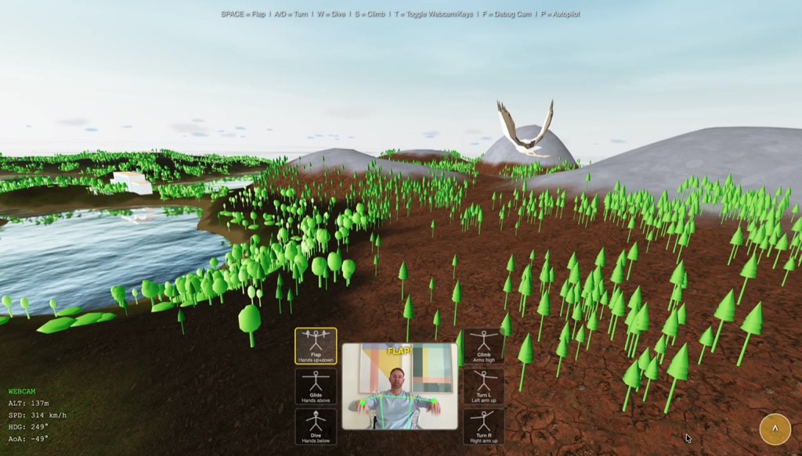
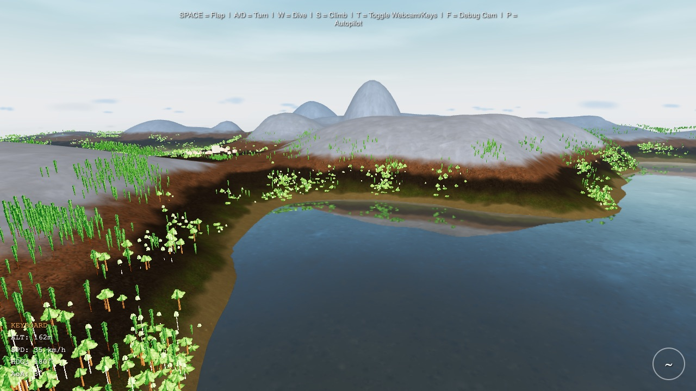
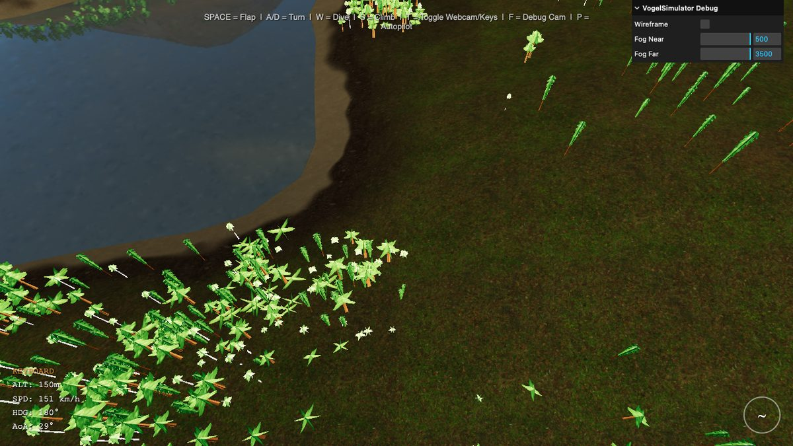
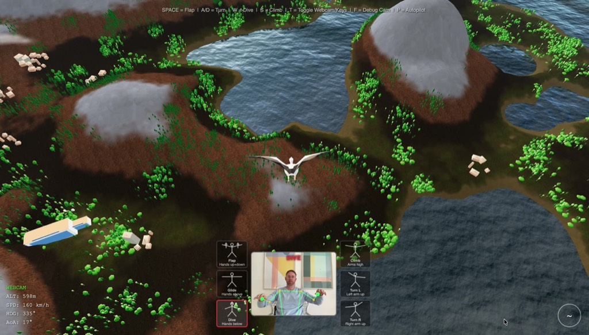
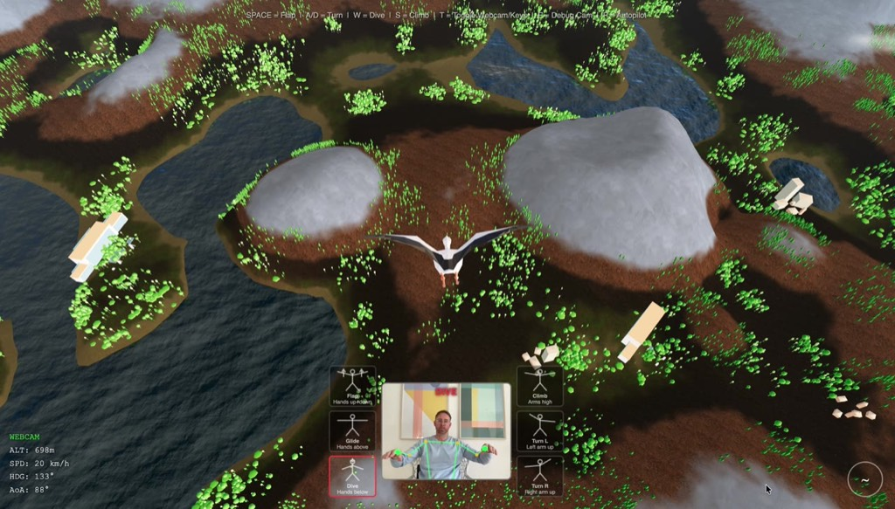

Kapitel 1
Probier es selbst
Bevor wir reden — flieg erst mal.
Alles läuft im Browser. Keine Installation, kein Download.
Jetzt fliegen →Steuerung per Tastatur:
SPACE Flügelschlag A/D Drehen W Sturzflug S Steigen T Webcam an/aus
Open Source: Der gesamte Quellcode ist öffentlich. Klone das Repository, lies den Code, bau weiter daran — du bist herzlich eingeladen.
Funktioniert? Gut. Dann lass mich dir erzählen, wie dieses Ding an einem einzigen Nachmittag entstanden ist.
Kapitel 2
Phase 1 — Das Gerüst
Eine leere Leinwand
Jedes Projekt beginnt mit einer leeren Leinwand. In unserem Fall: ein Terminal, npm create vite@latest, und die Entscheidung für Three.js als 3D-Engine. Kein Unity, kein Unreal — purer JavaScript-Code, der direkt im Browser läuft.
Warum Three.js? Weil es die niedrigste Einstiegshürde bietet. Kein Plugin, kein App-Store, kein Download. Der Nutzer öffnet eine URL und fliegt. Das war die Vision von Anfang an.
Die erste Szene war simpel: eine Kamera, ein Himmel, Licht.
const scene = new THREE.Scene();
const sky = new Sky();
sky.scale.setScalar(450000);
scene.add(sky);
const camera = new THREE.PerspectiveCamera(60, w/h, 2, 8000);
const renderer = new THREE.WebGLRenderer({ antialias: true });In 20 Minuten stand die erste leere Szene mit blauem Himmel. Kein Terrain, keine Bäume, kein Vogel. Aber ein Anfang. Und ein Anfang ist alles, was man braucht, um Momentum aufzubauen.
Kapitel 3
Phase 2 — Eine Welt aus dem Nichts
Wie baut man eine Landschaft, ohne ein einziges Polygon von Hand zu setzen?
Die Antwort: mit Mathe. Genauer gesagt, mit Parabeln. Stell dir einen flachen Tisch vor. Jetzt legst du unsichtbare Hügel darauf — jeder definiert durch einen Mittelpunkt, einen Radius und eine Höhe. An jedem Punkt des Terrains fragst du: Wie viele dieser Hügel überlagern sich hier? Und addierst ihre Beiträge.
function getTerrainHeight(x, z, arcs) {
let h = 0;
for (const arc of arcs) {
const dx = x - arc.cx, dz = z - arc.cz;
const distSq = dx * dx + dz * dz;
const contribution = 1 - distSq / (arc.radius * arc.radius);
if (contribution > 0) h += arc.height * contribution;
}
return h;
}900 positive Arcs formen die Hügel. 270 negative Arcs schneiden Täler hinein. Ein radialer Falloff sorgt dafür, dass die Insel an den Rändern sanft ins Meer abfällt. Das Ergebnis: eine natürlich wirkende Landschaft, die bei jedem Laden leicht anders aussieht — aber immer plausibel.

Aber eine schöne Landschaft nützt nichts, wenn sie ruckelt. 900 Arcs pro Vertex durchrechnen? Bei einem 400×400-Grid sind das über 140 Millionen Operationen — pro Frame. Das geht nicht.
Octree und Frustum Culling
Die Lösung: Ein Octree unterteilt die Welt in räumliche Zellen. Statt alle 100.000 Bäume und 900 Gebäude pro Frame zu rendern, fragt die Engine nur: Welche Zellen sind überhaupt im Sichtfeld der Kamera? Frustum Culling verwirft alles außerhalb des Sichtkegelss. Von 100.000 Bäumen werden typischerweise nur 3.000–5.000 tatsächlich gezeichnet.
Zusammenfassung
900 Parabeln + negative Arcs + radialer Insel-Falloff = eine natürliche Landschaft, ohne je einen Vertex manuell zu setzen.
Kapitel 4
Phase 3 — Der Vogel fliegt
Eine Kamera mit Höhenangst
Das Terrain war da. Aber ein Vogel, der nicht fliegt, ist nur eine Kamera mit Höhenangst.
Der erste Ansatz war ein simples Arcade-Modell: Drück eine Taste, steig nach oben. Lass los, sink nach unten. Das funktionierte — technisch. Aber es fühlte sich an wie ein Aufzug mit Panoramafenster. Kein Gleiten, kein Auftrieb, kein Fliegen.
Also bauten wir ein aerodynamisches Modell. Die zentrale Erkenntnis: Auftrieb hängt vom Quadrat der Geschwindigkeit ab. Das ist der dynamische Druck — dieselbe Physik, die echte Vögel und Flugzeuge in der Luft hält.
const dynamicPressure = 0.5 * AIR_DENSITY * speed * speed;
const liftMag = dynamicPressure * wingArea * CL / BIRD_MASS;
velocity.y += baselineLift * dt; // Wing-Incidence-Winkel
velocity.y += GRAVITY * dt; // -9.81 m/s²Der erste Flügelschlag brachte… nichts. Gravity gewann. Immer. Der Vogel fiel wie ein Stein, egal wie wild man die Leertaste hämmerte.
Das Problem: Wir hatten den Wing-Incidence-Winkel vergessen. Echte Vogelflügel sind nicht flach — sie haben einen eingebauten Anstellwinkel von etwa 3°. Dieser Winkel erzeugt auch im Geradeausflug minimalen Auftrieb. Ohne ihn ist der Flügel ein Brett, und ein Brett fällt.

Sechs Iterationen hat es gedauert. Sechs Versionen des Physik-Modells, bis das Verhältnis von Schwerkraft, Auftrieb und Flügelschlag stimmte. Bis man die Leertaste drücken konnte und spürte, dass der Vogel steigt. Bis ein Sturzflug sich gefährlich anfühlte und ein Looping den Magen zusammenzog.
Zusammenfassung
Realistische Physik ≠ spaßige Physik. Wir brauchten 6 Iterationen, bis Flattern tatsächlich Höhe brachte.
Kapitel 5
Phase 4 — Die Hände werden zu Flügeln
Der verrückte Teil
Und dann kam der verrückte Teil. Die Idee: Was wäre, wenn du nicht die Tastatur benutzt, sondern deine Arme? Wenn du vor der Webcam mit den Armen flatterst und der Vogel im Spiel tatsächlich steigt?
MediaPipe Pose Detection macht das möglich. Googles ML-Modell erkennt 33 Körperpunkte in Echtzeit — direkt im Browser, ohne Server, ohne Cloud. Schultern, Ellbogen, Handgelenke. Alles, was wir brauchen.
Die Logik: Wir messen die Höhe beider Handgelenke relativ zu den Schultern. Hohe Hände = Flügel oben. Niedrige Hände = Flügel unten. Die Änderungsrate dazwischen = Flügelschlag.
const delta = Math.abs(recentAvg - olderAvg);
if (delta > 0.025) {
flapStrength = clamp(delta * 8, 0.5, 1);
}Die Herausforderungen waren subtiler als erwartet. Das Webcam-Bild ist gespiegelt — links ist rechts. Manchmal verschwinden Landmarks, weil der Arm außerhalb des Bildes ist. Und die Erkennungsrate schwankt mit der Beleuchtung.
Unsere Lösung: Graceful Degradation. Wenn die Hände aus dem Bild verschwinden, gleitet der Vogel sanft weiter — statt abzustürzen. Wenn MediaPipe keine Pose erkennt, fällt das System leise auf Tastatursteuerung zurück. Kein Fehler, kein Popup, kein Frust.

Das Gefühl, wenn du zum ersten Mal die Arme hebst und der Vogel steigt — das ist der Moment, in dem das Projekt von „technisch interessant“ zu „das will ich Leuten zeigen“ kippt.
Kapitel 6
Die letzten 20%
80% der Zeit
Die letzten 20% kosten 80% der Zeit. Das ist universell. Und bei diesem Projekt waren die letzten 20% vor allem eins: Texturen.
Fünf Schichten Terrain
Eine einfarbige Landschaft sieht aus wie Knete. Also bauten wir einen Custom Shader mit fünf Texturschichten: Sand am Strand, Gras auf den Hügeln, Erde in mittleren Höhen, Fels an den Steilhängen, Schnee auf den Gipfeln. Jede Schicht blendet sanft in die nächste über.
float grassFactor = smoothstep(sandEnd, sandEnd + 8.0, h)
* (1.0 - smoothstep(grassEnd - 8.0, grassEnd + 8.0, h));
float rockFactor = smoothstep(earthEnd, earthEnd + 5.0, h)
* (1.0 - smoothstep(rockEnd - 8.0, rockEnd + 8.0, h));
float snowFactor = smoothstep(rockEnd - 8.0, rockEnd + 8.0, h);Die Schnee-Textur war grau. Drei Stunden lang suchten wir den Bug in der Shader-Logik. Wir prüften die Blending-Faktoren, die Höhenschwellen, die UV-Koordinaten. Alles sah korrekt aus. Bis wir merkten: Die Logik war korrekt. Die Textur war einfach nicht weiß genug. Ein 200×200-Pixel-JPEG mit einem Durchschnittswert von 180 statt 250. Drei Stunden Debugging für ein Bildbearbeitungsproblem.
Gebäude und Siedlungen
Eine Insel ohne Zivilisation wirkt leer. Also generierten wir Gebäude — fünf Typen: Wohnhäuser, Scheunen, Türme, Hotels und Hochhäuser. Jedes mit prozeduralen Backstein- oder Betontexturen, zufälligen Proportionen und Farbvariationen.
Die Platzierung nutzt Noise-Funktionen: Siedlungen entstehen in flachen Gebieten nahe der Küste. Wälder übernehmen die Hügel und Berge. Eine zweite Noise-Ebene trennt Stadt- von Waldzonen, damit Bäume nicht durch Hausdächer wachsen.


Zusammenfassung
Schneebedeckte Gipfel, 900 Gebäude, 100.000 Bäume — alles prozedural generiert.
Kapitel 7
Was das über KI und Softwareentwicklung sagt
Mensch und Maschine
Lass uns ehrlich sein: Dieses Projekt hätte ohne KI Wochen gedauert. Nicht weil die Konzepte schwer sind — Three.js-Dokumentation ist hervorragend, MediaPipe hat Beispiele. Sondern weil die Iteration so viel schneller war.
Die Rollenverteilung war klar:
Der Mensch lieferte Vision, ästhetisches Urteil und das unersetzliche „das fühlt sich falsch an“. Kein Prompt der Welt hätte die Erkenntnis automatisiert, dass der Flügelschlag sich „matschig“ anfühlt. Oder dass die Bäume von oben wie grüne Stecken aussehen.
Die KI lieferte Architektur, Boilerplate, Debugging und eine Iterationsgeschwindigkeit, die kein einzelner Entwickler erreicht. Als der Mensch sagte „mehr Bäume“, fügte die KI 100.000 hinzu — mit Octree-Optimierung, LOD-System und Frustum Culling, damit die Performance nicht einbricht.
Aber — und das ist der Punkt — die KI hat die Bäume nicht von sich aus verbessert. Sie hat 100.000 identische grüne Kegel platziert und war zufrieden. Erst als der Mensch sagte „die sehen aus wie Plastik“, kamen Texturvariationen, verschiedene Baumtypen und Farbabstufungen.
Die Zukunft
In fünf Jahren wird jeder Teenager so etwas an einem Nachmittag bauen können. Die Werkzeuge werden besser, die Modelle schlauer, die Einstiegshürde niedriger. Aber der entscheidende Faktor wird derselbe bleiben: Jemand muss wissen, was gut aussieht, sich gut anfühlt und Spaß macht.
Der Vogel fliegt. Aber er fliegt nicht, weil die KI allein es wollte. Er fliegt, weil ein Mensch sagte: „Das muss sich wie Fliegen anfühlen.“ Und dann so lange iterierte, bis es das tat.
Überzeugt? Oder zumindest neugierig?
Jetzt fliegen →